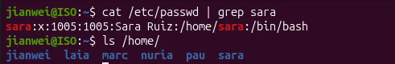

3. Gestió de processos
Figura 3.1 (Nivell 0 - Captura 1a): Permisos dels scripts.Comandes executades: chmod +x backup_nocturn espia descarrega.sh sospitosos.sh i ls -l
Descripció: Donem permisos d'execució als scripts amb chmod +x i comprovem amb ls -l que s'hagin aplicat bé.
Figura 3.2 (Nivell 0 - Captura 1b): Execució dels scripts de fons.Comanda executada: ./sospitosos.sh
Descripció: Executem el script per posar en marxa en segon pla els processos de la pràctica.
Figura 3.3 (Nivell 1 - Captura 2a): Arbre de processos de l'usuari.Comanda executada: pstree -p $USER
Descripció: Mirem l'arbre de processos del nostre usuari per veure quins estan en marxa i d'on pengen.
Figura 3.4 (Nivell 1 - Captura 2b): PIDs dels processos minador.Descripció: Detall de la sortida de pstree on es veuen els PIDs dels dos processos minador.
Figura 3.5 (Nivell 2 - Captura 3): Ús de recursos amb top.Comanda executada: top
Descripció: Comprovem amb la comanda top que els dos processos minador són els que estan consumint més CPU.
Figura 3.6 (Nivell 3 - Captura 4): Estat i informació dels processos amb ps.Comandes executades: pgrep -l 'minador|espia|backup' i ps -o pid,ppid,user,stat,etime,%cpu,comm -C minador,espia,backup_nocturn
Descripció: Busquem els PIDs i fem un llistat detallat per veure l'estat de cada procés (executable, en repòs, etc.) i el seu procés pare.
Figura 3.7 (Nivell 4 - Captura 5a): Canvi entre primer i segon pla.Comandes executades: ./descarrega.sh, Ctrl+Z, jobs -l, bg %1 i fg %1
Descripció: Enviem la descàrrega a segon pla amb Ctrl+Z i bg, i la tornem a posar en primer pla amb fg.
Figura 3.8 (Nivell 4 - Captura 5b): Seguiment de la descàrrega.Comanda executada: watch -n 1 cat progres.txt
Descripció: Monitoritzem des d'una segona terminal el fitxer de progrés de la descàrrega cada segon.
Figura 3.9 (Nivell 5 - Captura 6): Canvi de prioritat amb renice.Comandes executades: sudo renice -n -10 -p 8756
Descripció: Augmentem la prioritat del procés de descàrrega assignant-li un valor NI de -10 amb sudo renice.
Figura 3.10 (Nivell 6 - Captura 7a): Esborrat d'un procés amb kill -9.Comandes executades: kill 6318 i kill -9 6318
Descripció: Intentem tancar el procés espia normalment i, com que no respon, utilitzem kill -9 per forçar la seva aturada.
Figura 3.11 (Nivell 6 - Captura 7b): Pausa d'un procés amb SIGSTOP.Comandes executades: kill -STOP 4985
Descripció: Pausem el procés de la còpia de seguretat enviant el senyal SIGSTOP.
Figura 3.12 (Nivell 6 - Captura 7c): Represa del procés amb SIGCONT.Comandes executades: kill -CONT 4985
Descripció: Tornem a posar en marxa el procés pausat enviant-li el senyal SIGCONT.
Figura 3.13 (Nivell 7 - Captura 8a): Finalització de la descàrrega.Descripció: Comprovació que la descàrrega s'ha completat al 100% a la finestra de seguiment.
Figura 3.14 (Nivell 7 - Captura 8b): Comprovació de l'arbre del procés.Comanda executada: pstree -ps $(pgrep descarrega)
Descripció: Veiem tot l'arbre de pares del procés de descàrrega des de systemd.
------------------------------------------------------------------------------------------------------------
↑ Tornar a l'índex
5. Gestió d'usuaris, grups i permisos (Part 1) - Missió PixelForge
Figura 5.1 (Nivell 0): Identificació de l'usuari actual i dels seus grups.Comandes executades: whoami i id
Descripció: Comprovem quin usuari som actualment al sistema (`whoami`) i a quins grups pertanyem (`id`).
Figura 5.2 (Nivell 0): Dades del meu usuari a /etc/passwd.Comanda executada: grep $USER /etc/passwd
Descripció: Cerquem la línia del nostre usuari al fitxer /etc/passwd per veure l'UID, GID, carpeta personal i shell.
Figura 5.3 (Nivell 0): Intent de llegir /etc/shadow sense sudo.Comanda executada: cat /etc/shadow
Descripció: Provem de llegir el fitxer de contrasenyes /etc/shadow com a usuari normal i comprovem que no en tenim permís.
Figura 5.4 (Nivell 0): Lectura de /etc/shadow amb permisos de root.Comanda executada: sudo grep $USER /etc/shadow
Descripció: Utilitzem sudo per poder veure la informació del nostre usuari i el hash de la contrasenya a /etc/shadow.
Figura 5.5 (Nivell 0): Membres del grup sudo.Comanda executada: getent group sudo
Descripció: Comprovem quins usuaris tenen permisos d'administrador consultant els membres del grup sudo.
Figura 5.6 (Nivell 1 - Repte 1): Creació de la usuària sara.Comandes executades: cat /etc/passwd | grep sara i ls /home/
Descripció: Creem la nova usuària sara i comprovem que s'ha creat correctament la seva carpeta a /home.

Figura 5.7 (Nivell 1 - Captura 2): Comprovació dels usuaris creats.Comandes executades: getent passwd nuria pau marc laia i ls /home
Descripció: Verifiquem que tots els usuaris de l'equip (nuria, pau, marc i laia) s'hagin creat amb la seva carpeta a /home.
Figura 5.8 (Nivell 2): Canvi a l'usuària nuria.Comandes executades: su - nuria, whoami i pwd
Descripció: Entrem com a l'usuària nuria amb su - i comprovem que estem directament a la seva carpeta personal.
Figura 5.9 (Nivell 2 - Captura 3): Creació d'un fitxer de prova.Comandes executades: touch primer_dia.txt i ls -l
Descripció: Creem un fitxer nou com a nuria i verifiquem amb ls -l que ella n'és la propietària.
Figura 5.10 (Nivell 3): Creació de grups i simulació d'un error.Comandes executades: sudo groupadd progamadors i tail -5 /etc/group
Descripció: Creem els grups de treball i en creem un amb una errada de mecanografia (progamadors) per corregir-lo després.
Figura 5.11 (Nivell 3 - Captura 4): Esborrat del grup erroni.Comandes executades: sudo groupdel progamadors i getent group progamadors
Descripció: Eliminem el grup mal escrit amb la comanda groupdel i comprovem que ja no existeix al sistema.
Figura 5.12 (Nivell 4): Error habitual en usar usermod -G sense -a.Comandes executades: sudo usermod -G testers nuria i groups nuria
Descripció: Veiem què passa si oblidem el flag -a en afegir un grup secundari: l'usuari perd tots els altres grups on estava.
Figura 5.13 (Nivell 4): Afegiment correcte de grups amb usermod -aG.Comandes executades: sudo usermod -aG programadors nuria i groups nuria
Descripció: Corregim l'error afegint la Núria al grup programadors fent servir l'opció correcta -aG.
Figura 5.14 (Nivell 4 - Captura 5): Comprovació final dels grups.Comanda executada: getent group programadors artistes testers becaris
Descripció: Comprovem que tots els usuaris hagin quedat assignats correctament als seus grups corresponents.
Figura 5.15 (Nivell 5 - Captura 6): Canvi de grup principal d'un usuari.Comandes executades: sudo usermod -g programadors pau, id pau i ls -l
Descripció: Canviem el grup principal d'en Pau a programadors i comprovem que els nous fitxers que crea s'assignen directament a aquest nou grup.
Figura 5.16 (Nivell 6): Comprovació del compte d'en Marc a /etc/shadow.Comanda executada: sudo grep marc /etc/shadow
Descripció: Mirem la línia d'en Marc al fitxer de contrasenyes xifrades /etc/shadow per veure com queda quan es bloqueja.
Figura 5.17 (Nivell 6): Prova d'accés a un compte bloquejat.Comanda executada: su - marc
Descripció: Intentem entrar com a marc estant el compte bloquejat i comprovem que el sistema ens denega l'accés.
Figura 5.18 (Nivell 6 - Captura 7): Desbloqueig del compte amb passwd -u.Comandes executades: sudo passwd -u marc i su - marc
Descripció: Desbloquejem el compte d'en Marc amb passwd -u i comprovem que ara sí que pot tornar a entrar.
Figura 5.19 (Nivell 7): Canvi de nom d'usuari mantenint l'UID.Comandes executades: sudo usermod -l nvidal nuria i id nvidal
Descripció: Canviem el nom d'usuari de nuria a nvidal amb usermod -l i comprovem que manté el mateix UID (1001).
Figura 5.20 (Nivell 7 - Captura 8): Canvi de nom de grup i de la carpeta /home.Comandes executades: sudo groupmod -n nvidal nuria i sudo usermod -d /home/nvidal -m nvidal
Descripció: Reanomenem el seu grup personal i traslladem la seva carpeta a /home/nvidal amb usermod -d -m.
Figura 5.21 (Nivell 8 - Captura 9): Esborrat d'usuari sense eliminar la seva carpeta.Comandes executades: sudo userdel laia i ls -l /home
Descripció: Eliminem la usuària laia sense el flag -r i comprovem com la seva carpeta queda desvinculada i només mostra el seu antic número d'UID.
------------------------------------------------------------------------------------------------------------
↑ Tornar a l'índex